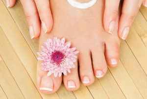
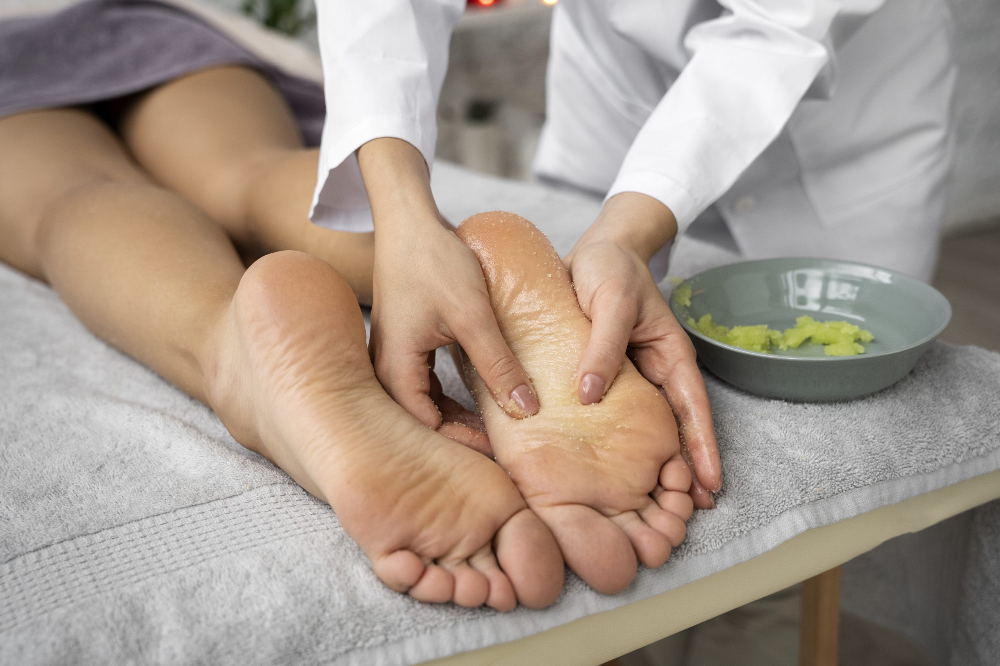

Servicios personalizados para tu comodidad
| Servicio | Precio (S/) |
|---|---|
| LIMPIEZA COMPLETA Y PROFUNDA | |
| QUIROPODIA | 105.00 |
| QUIROPODIA DIABETICA | 120.00 |
| QUIROPODIA GERIÁTICA | 120.00 |
| QUIROPODIA PEDIÁTRICA | 70.00 |
| PROCEDIMIENTOS | |
| CURACIÓN TÓPICA | 70.00 |
| EXTRACCIÓN UÑEROS 1° Y 2° | 130.00 |
| EXTRACCIÓN UÑEROS 3° | 150.00 |
| EXTRACCIÓN 4 UÑEROS LATERALES | 200.00 |
| ADICIONALES | |
| PARAFINA LAVANDA | 50.00 |
| EXFOLIACIÓN CON SALES | 40.00 |
| REFLEXOLOGÍA PODAL | 90.00 |
| HIDROMASAJES (TINA) | 60.00 |
| DESINFECCIÓN CALZADO | 20.00 |
| ALTA FRECUENCIA | 75.00 |
| DESINTOXICACIÓM IÓNICA | 75.00 |

